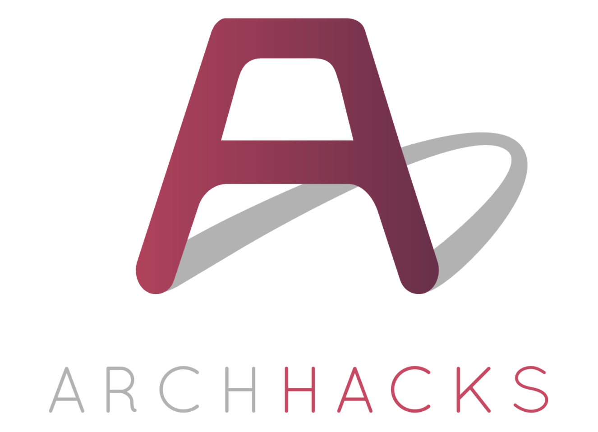

Our hackathon project was inspired by this TEDTalk.
In this video, designer Mileha Soneji recounts her astonishment at watching her uncle — who has Parkinson's and normally uses a walker — ascend and descend the stairs with ease. She learned that when it comes to Parkinson's, continuous movements like riding a bike or taking the stairs are easier to negotiate than "regular walking". When she then experimented with applying a fake, painted staircase to a flat surface, her uncle could glide over it with little trouble.
The crux of Soneji's talk is about seeking simple, low-tech solutions, but we found the prospect of building a high-tech version irresistible. We thought: What if we take this staircase illusion and apply it anywhere in the world?
ArchHacks
ArchHacks is a hackathon hosted at Washington University in St. Louis, MO.
500 students "with a passion for technology,
design, and, most importantly, building things"
are invited to spend the weekend developing concepts that fall under
the theme of health tech. Throughout the length of the event,
representatives from Major League Hacking and the health industry are available on-site for
guidance and feedback.
